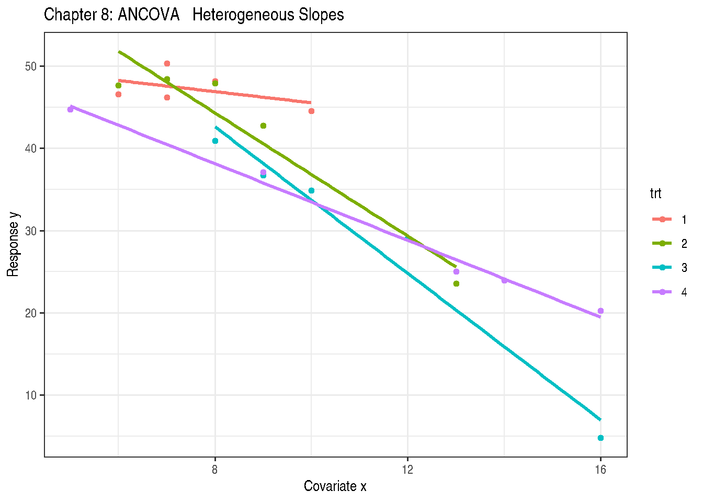
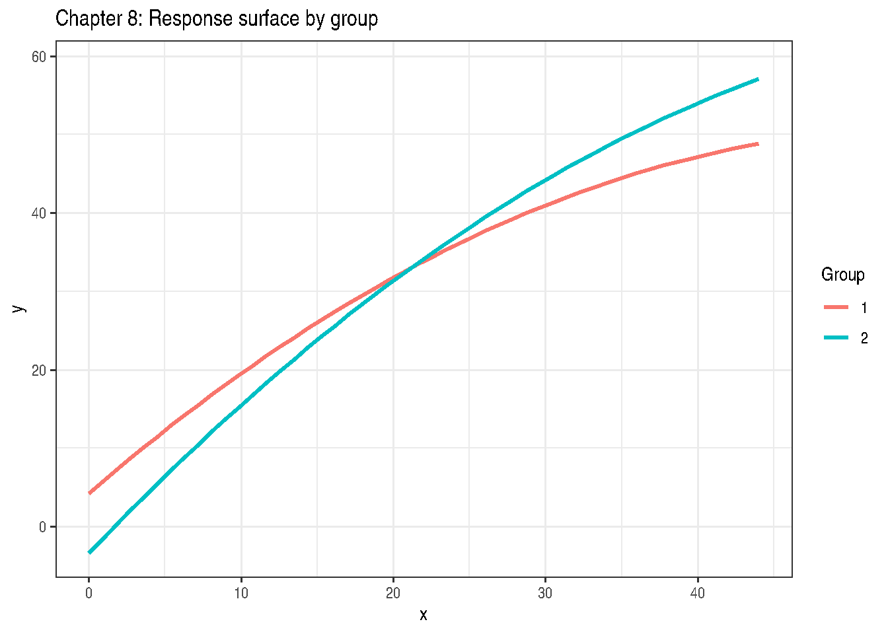

Chapter 8: Treatment and Explanatory Variable Structure
Factorial Designs, Interaction Models, and Response Surface Methods
2026-05-11
Source:vignettes/chapter-08-treatment-structures.qmd
1 Overview
Chapter 8 covers treatment and regression structures for GLMMs:
- Factorial designs with qualitative factors
- Analysis of covariance (ANCOVA)
- Response surface methodology (RSM)
- Nested and crossed factor structures
2 Example 8.1 — Two-Way Factorial (All Qualitative)
The two-way factorial model:
\[y_{ijk} = \mu + \alpha_i + \beta_j + (\alpha\beta)_{ij} + \varepsilon_{ijk}\]
data(DataSet8.1)
DataSet8.1$a <- factor(DataSet8.1$a)
DataSet8.1$b <- factor(DataSet8.1$b)
str(DataSet8.1)'data.frame': 24 obs. of 3 variables:
$ a: Factor w/ 2 levels "0","1": 1 1 1 1 1 1 1 1 1 1 ...
$ b: Factor w/ 3 levels "0","1","2": 1 1 1 1 2 2 2 2 3 3 ...
$ y: int 55 48 51 48 60 59 66 54 75 61 ...
Call:
stats::lm(formula = y ~ a * b, data = DataSet8.1)
Residuals:
Min 1Q Median 3Q Max
-10.50 -2.50 0.00 3.25 7.75
Coefficients:
Estimate Std. Error t value Pr(>|t|)
(Intercept) 50.500 2.561 19.718 1.23e-13 ***
a1 17.250 3.622 4.763 0.000156 ***
b1 9.250 3.622 2.554 0.019936 *
b2 21.000 3.622 5.798 1.71e-05 ***
a1:b1 -9.750 5.122 -1.904 0.073089 .
a1:b2 -17.750 5.122 -3.465 0.002761 **
---
Signif. codes: 0 '***' 0.001 '**' 0.01 '*' 0.05 '.' 0.1 ' ' 1
Residual standard error: 5.122 on 18 degrees of freedom
Multiple R-squared: 0.7352, Adjusted R-squared: 0.6617
F-statistic: 9.997 on 5 and 18 DF, p-value: 0.0001049
anova(Exam8.1.lm)| Df | Sum Sq | Mean Sq | F value | Pr(>F) | |
|---|---|---|---|---|---|
| a | 1 | 392.0417 | 392.04167 | 14.942827 | 0.0011330 |
| b | 2 | 603.2500 | 301.62500 | 11.496559 | 0.0006068 |
| a:b | 2 | 316.0833 | 158.04167 | 6.023822 | 0.0099348 |
| Residuals | 18 | 472.2500 | 26.23611 | NA | NA |
a b emmean SE df lower.CL upper.CL
0 0 50.5 2.56 18 45.1 55.9
1 0 67.8 2.56 18 62.4 73.1
0 1 59.8 2.56 18 54.4 65.1
1 1 67.2 2.56 18 61.9 72.6
0 2 71.5 2.56 18 66.1 76.9
1 2 71.0 2.56 18 65.6 76.4
Confidence level used: 0.95
## Simple effects: b within each level of a
emmeans::contrast(
emmeans::emmeans(Exam8.1.lm, ~ b | a),
method = "pairwise", adjust = "tukey"
)a = 0:
contrast estimate SE df t.ratio p.value
b0 - b1 -9.25 3.62 18 -2.554 0.0498
b0 - b2 -21.00 3.62 18 -5.798 <0.0001
b1 - b2 -11.75 3.62 18 -3.244 0.0119
a = 1:
contrast estimate SE df t.ratio p.value
b0 - b1 0.50 3.62 18 0.138 0.9896
b0 - b2 -3.25 3.62 18 -0.897 0.6488
b1 - b2 -3.75 3.62 18 -1.035 0.5649
P value adjustment: tukey method for comparing a family of 3 estimates 3 Example 8.2 — ANCOVA
Analysis of covariance with treatment and continuous covariate \(x\):
\[y_{ij} = \mu + \tau_i + \beta x_{ij} + \varepsilon_{ij}\]
'data.frame': 20 obs. of 3 variables:
$ trt: Factor w/ 4 levels "1","2","3","4": 1 1 1 1 1 2 2 2 2 2 ...
$ x : int 12 13 12 7 14 10 6 12 10 11 ...
$ y : num 46 41.8 46.9 57 36.9 ...
Call:
stats::lm(formula = y ~ trt + x, data = DataSet8.2)
Residuals:
Min 1Q Median 3Q Max
-2.7908 -1.6151 -0.3901 1.2320 6.1796
Coefficients:
Estimate Std. Error t value Pr(>|t|)
(Intercept) 76.6348 3.6123 21.215 1.34e-12 ***
trt2 6.8865 1.7156 4.014 0.00113 **
trt3 -2.8297 1.7558 -1.612 0.12787
trt4 5.4011 1.6578 3.258 0.00530 **
x -2.6657 0.2951 -9.033 1.87e-07 ***
---
Signif. codes: 0 '***' 0.001 '**' 0.01 '*' 0.05 '.' 0.1 ' ' 1
Residual standard error: 2.579 on 15 degrees of freedom
Multiple R-squared: 0.9029, Adjusted R-squared: 0.877
F-statistic: 34.88 on 4 and 15 DF, p-value: 1.968e-07
anova(Exam8.2.lm)| Df | Sum Sq | Mean Sq | F value | Pr(>F) | |
|---|---|---|---|---|---|
| trt | 3 | 385.28225 | 128.427416 | 19.30303 | 2.08e-05 |
| x | 1 | 542.89514 | 542.895141 | 81.59879 | 2.00e-07 |
| Residuals | 15 | 99.79838 | 6.653225 | NA | NA |
## Adjusted means (covariate at its mean)
emm8.2 <- emmeans::emmeans(Exam8.2.lm, ~ trt,
at = list(x = mean(DataSet8.2$x)))
print(emm8.2) trt emmean SE df lower.CL upper.CL
1 47.7 1.17 15 45.2 50.2
2 54.6 1.19 15 52.1 57.1
3 44.9 1.23 15 42.3 47.5
4 53.1 1.26 15 50.4 55.8
Confidence level used: 0.95
emmeans::contrast(emm8.2, method = "pairwise") contrast estimate SE df t.ratio p.value
trt1 - trt2 -6.89 1.72 15 -4.014 0.0055
trt1 - trt3 2.83 1.76 15 1.612 0.4018
trt1 - trt4 -5.40 1.66 15 -3.258 0.0244
trt2 - trt3 9.72 1.64 15 5.940 0.0001
trt2 - trt4 1.49 1.83 15 0.812 0.8477
trt3 - trt4 -8.23 1.88 15 -4.367 0.0028
P value adjustment: tukey method for comparing a family of 4 estimates 4 Example 8.3 — Heterogeneous Slopes ANCOVA
data(DataSet8.3)
DataSet8.3$trt <- factor(DataSet8.3$trt)
Exam8.3.lm <- stats::lm(y ~ trt * x, data = DataSet8.3)
summary(Exam8.3.lm)
Call:
stats::lm(formula = y ~ trt * x, data = DataSet8.3)
Residuals:
Min 1Q Median 3Q Max
-4.1473 -1.5168 -0.3092 1.2697 4.2013
Coefficients:
Estimate Std. Error t value Pr(>|t|)
(Intercept) 52.2940 6.8869 7.593 6.39e-06 ***
trt2 21.9884 8.2121 2.678 0.02013 *
trt3 25.9683 8.4286 3.081 0.00952 **
trt4 4.5282 7.8242 0.579 0.57347
x -0.6754 0.8921 -0.757 0.46357
trt2:x -3.0704 1.0230 -3.001 0.01104 *
trt3:x -3.7798 0.9894 -3.820 0.00244 **
trt4:x -1.6591 0.9437 -1.758 0.10419
---
Signif. codes: 0 '***' 0.001 '**' 0.01 '*' 0.05 '.' 0.1 ' ' 1
Residual standard error: 2.706 on 12 degrees of freedom
Multiple R-squared: 0.9696, Adjusted R-squared: 0.9519
F-statistic: 54.7 on 7 and 12 DF, p-value: 3.676e-08
anova(Exam8.3.lm)| Df | Sum Sq | Mean Sq | F value | Pr(>F) | |
|---|---|---|---|---|---|
| trt | 3 | 1174.59905 | 391.533016 | 53.478284 | 0.0000003 |
| x | 1 | 1444.11688 | 1444.116881 | 197.247458 | 0.0000000 |
| trt:x | 3 | 184.50998 | 61.503328 | 8.400549 | 0.0028089 |
| Residuals | 12 | 87.85615 | 7.321346 | NA | NA |
ggplot(DataSet8.3, aes(x = x, y = y, colour = trt, group = trt)) +
geom_point() +
geom_smooth(method = "lm", se = FALSE) +
labs(title = "Chapter 8: ANCOVA — Heterogeneous Slopes",
x = "Covariate x", y = "Response y") +
theme_bw()
5 Example 8.7 — Response Surface
'data.frame': 270 obs. of 3 variables:
$ a: Factor w/ 2 levels "1","2": 1 1 1 1 1 1 1 1 1 1 ...
$ x: int 0 0 0 1 1 1 2 2 2 3 ...
$ y: num 3.5 3 7.3 5.2 5.2 5.5 3.1 7.1 5 6.3 ...
## Quadratic response surface within groups
Exam8.7.lm <- stats::lm(y ~ a + x + I(x^2) + a:x, data = DataSet8.7)
summary(Exam8.7.lm)
Call:
stats::lm(formula = y ~ a + x + I(x^2) + a:x, data = DataSet8.7)
Residuals:
Min 1Q Median 3Q Max
-13.7817 -3.6370 -0.1813 4.0536 14.0868
Coefficients:
Estimate Std. Error t value Pr(>|t|)
(Intercept) 4.256016 1.204546 3.533 0.000484 ***
a2 -7.642834 1.361533 -5.613 5.00e-08 ***
x 1.678950 0.107811 15.573 < 2e-16 ***
I(x^2) -0.015140 0.002296 -6.595 2.30e-10 ***
a2:x 0.361779 0.053294 6.788 7.41e-11 ***
---
Signif. codes: 0 '***' 0.001 '**' 0.01 '*' 0.05 '.' 0.1 ' ' 1
Residual standard error: 5.687 on 265 degrees of freedom
Multiple R-squared: 0.8878, Adjusted R-squared: 0.8861
F-statistic: 524.1 on 4 and 265 DF, p-value: < 2.2e-16
xseq <- seq(min(DataSet8.7$x), max(DataSet8.7$x), length.out = 50L)
pred_df <- do.call(rbind, lapply(levels(DataSet8.7$a), function(ai) {
nd <- data.frame(a = factor(ai, levels = levels(DataSet8.7$a)), x = xseq)
nd$y_hat <- stats::predict(Exam8.7.lm, newdata = nd)
nd
}))
ggplot(DataSet8.7, aes(x = x, y = y, colour = a)) +
geom_point(alpha = 0.5) +
geom_line(data = pred_df, aes(x = x, y = y_hat, colour = a),
linewidth = 1) +
labs(title = "Chapter 8: Response surface by group",
x = "x", y = "y", colour = "Group") +
theme_bw()
6 Key Takeaways
- Factorial interactions require simple effects comparisons (comparing one factor at each level of the other).
- ANCOVA requires checking the homogeneity of slopes assumption.
-
emmeanshandles adjusted means, custom contrasts, and interaction decomposition seamlessly. - Response surface models use polynomial terms; for GLMMs, the polynomial is on the linear predictor scale.
7 References
Stroup, W. W., Ptukhina, M., and Garai, S. (2024). Generalized Linear Mixed Models: Modern Concepts, Methods and Applications (2nd ed.). CRC Press.